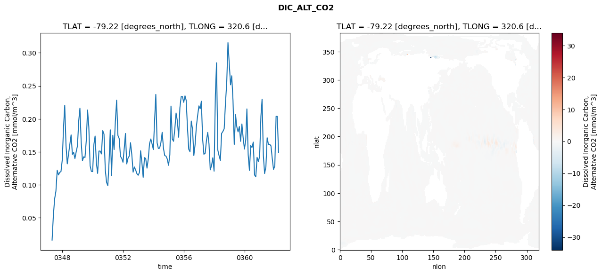
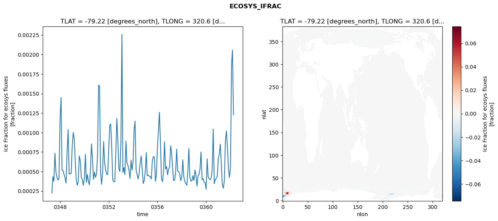
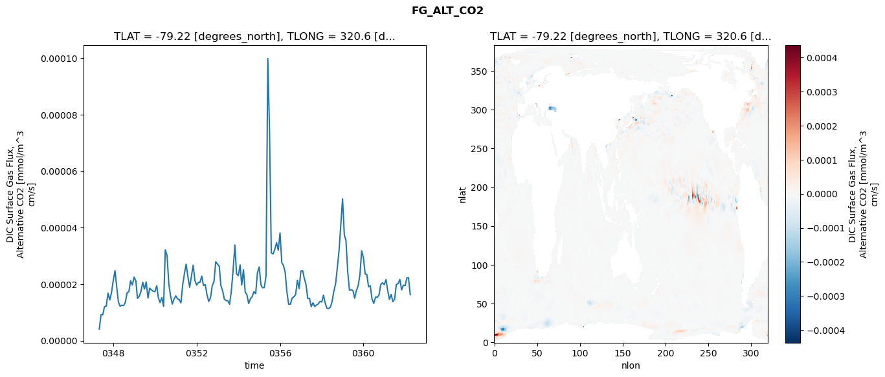
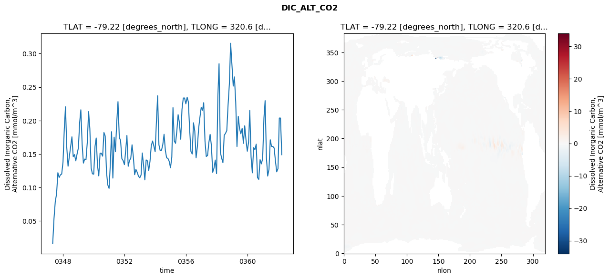
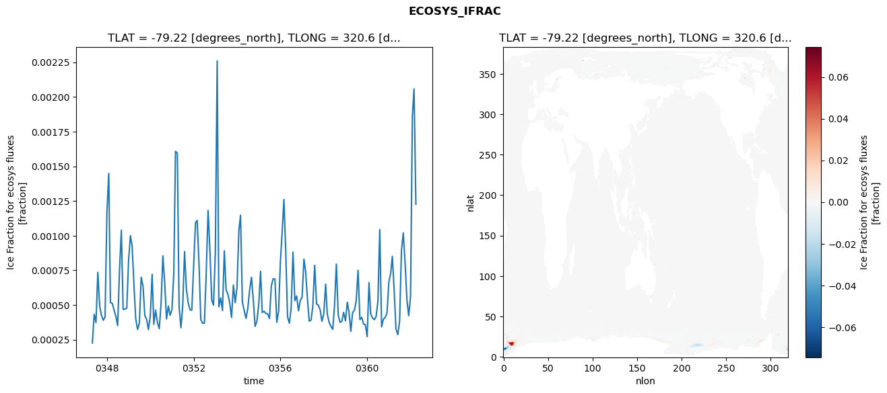
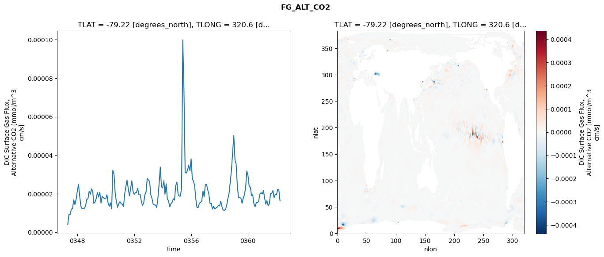

glb-dor_North_Atlantic_basin_044_1999-04-01_00177#
Simulation details#
Case: smyle.cdr-atlas-v0.glb-dor_North_Atlantic_basin_044_1999-04-01_00177.001
Basin: North_Atlantic_basin
Polygon: 44.0
Start date: 1999-04
Show code cell source Hide code cell source
import xarray as xr
import matplotlib.pyplot as plt
Show code cell source Hide code cell source
zarr_store = "/path/to/zarr/store"
# Parameters
zarr_store = "/global/cfs/projectdirs/m4746/Projects/Ocean-CDR-Atlas-v0/data/validation/smyle.cdr-atlas-v0.glb-dor_North_Atlantic_basin_044_1999-04-01_00177.001.validation.zarr"
Show code cell source Hide code cell source
%%time
ds_o = xr.open_zarr(zarr_store).compute()
ds_o
CPU times: user 614 ms, sys: 487 ms, total: 1.1 s
Wall time: 1.29 s
<xarray.Dataset> Size: 2MB
Dimensions: (nlat: 384, nlon: 320, time: 180)
Coordinates:
TLAT float64 8B -79.22
TLONG float64 8B 320.6
ULAT float64 8B -78.95
ULONG float64 8B 321.1
* time (time) object 1kB 0347-05-01 00:00:00 ... 0362-04-01 0...
z_t float32 4B 500.0
Dimensions without coordinates: nlat, nlon
Data variables:
ALK_ALT_CO2_diff (nlat, nlon) float32 492kB nan nan nan ... nan nan nan
ALK_ALT_CO2_rmse (time) float64 1kB 0.01149 0.04187 ... 0.18 0.1127
DIC_ALT_CO2_diff (nlat, nlon) float32 492kB nan nan nan ... nan nan nan
DIC_ALT_CO2_rmse (time) float64 1kB 0.01619 0.05367 ... 0.2038 0.149
ECOSYS_IFRAC_diff (nlat, nlon) float32 492kB nan nan nan ... nan nan nan
ECOSYS_IFRAC_rmse (time) float64 1kB 0.0002252 0.0004334 ... 0.001226
FG_ALT_CO2_diff (nlat, nlon) float32 492kB nan nan nan ... nan nan nan
FG_ALT_CO2_rmse (time) float64 1kB 4.079e-06 9.236e-06 ... 1.629e-05xarray.Dataset
- nlat: 384
- nlon: 320
- time: 180
- TLAT()float64-79.22
- long_name :
- array of t-grid latitudes
- units :
- degrees_north
array(-79.22052261)
- TLONG()float64320.6
- long_name :
- array of t-grid longitudes
- units :
- degrees_east
array(320.56250892)
- ULAT()float64-78.95
- long_name :
- array of u-grid latitudes
- units :
- degrees_north
array(-78.95289509)
- ULONG()float64321.1
- long_name :
- array of u-grid longitudes
- units :
- degrees_east
array(321.12500894)
- time(time)object0347-05-01 00:00:00 ... 0362-04-...
- bounds :
- time_bound
- long_name :
- time
array([cftime.DatetimeNoLeap(347, 5, 1, 0, 0, 0, 0, has_year_zero=True), cftime.DatetimeNoLeap(347, 6, 1, 0, 0, 0, 0, has_year_zero=True), cftime.DatetimeNoLeap(347, 7, 1, 0, 0, 0, 0, has_year_zero=True), cftime.DatetimeNoLeap(347, 8, 1, 0, 0, 0, 0, has_year_zero=True), cftime.DatetimeNoLeap(347, 9, 1, 0, 0, 0, 0, has_year_zero=True), cftime.DatetimeNoLeap(347, 10, 1, 0, 0, 0, 0, has_year_zero=True), cftime.DatetimeNoLeap(347, 11, 1, 0, 0, 0, 0, has_year_zero=True), cftime.DatetimeNoLeap(347, 12, 1, 0, 0, 0, 0, has_year_zero=True), cftime.DatetimeNoLeap(348, 1, 1, 0, 0, 0, 0, has_year_zero=True), cftime.DatetimeNoLeap(348, 2, 1, 0, 0, 0, 0, has_year_zero=True), cftime.DatetimeNoLeap(348, 3, 1, 0, 0, 0, 0, has_year_zero=True), cftime.DatetimeNoLeap(348, 4, 1, 0, 0, 0, 0, has_year_zero=True), cftime.DatetimeNoLeap(348, 5, 1, 0, 0, 0, 0, has_year_zero=True), cftime.DatetimeNoLeap(348, 6, 1, 0, 0, 0, 0, has_year_zero=True), cftime.DatetimeNoLeap(348, 7, 1, 0, 0, 0, 0, has_year_zero=True), cftime.DatetimeNoLeap(348, 8, 1, 0, 0, 0, 0, has_year_zero=True), cftime.DatetimeNoLeap(348, 9, 1, 0, 0, 0, 0, has_year_zero=True), cftime.DatetimeNoLeap(348, 10, 1, 0, 0, 0, 0, has_year_zero=True), cftime.DatetimeNoLeap(348, 11, 1, 0, 0, 0, 0, has_year_zero=True), cftime.DatetimeNoLeap(348, 12, 1, 0, 0, 0, 0, has_year_zero=True), cftime.DatetimeNoLeap(349, 1, 1, 0, 0, 0, 0, has_year_zero=True), cftime.DatetimeNoLeap(349, 2, 1, 0, 0, 0, 0, has_year_zero=True), cftime.DatetimeNoLeap(349, 3, 1, 0, 0, 0, 0, has_year_zero=True), cftime.DatetimeNoLeap(349, 4, 1, 0, 0, 0, 0, has_year_zero=True), cftime.DatetimeNoLeap(349, 5, 1, 0, 0, 0, 0, has_year_zero=True), cftime.DatetimeNoLeap(349, 6, 1, 0, 0, 0, 0, has_year_zero=True), cftime.DatetimeNoLeap(349, 7, 1, 0, 0, 0, 0, has_year_zero=True), cftime.DatetimeNoLeap(349, 8, 1, 0, 0, 0, 0, has_year_zero=True), cftime.DatetimeNoLeap(349, 9, 1, 0, 0, 0, 0, has_year_zero=True), cftime.DatetimeNoLeap(349, 10, 1, 0, 0, 0, 0, has_year_zero=True), cftime.DatetimeNoLeap(349, 11, 1, 0, 0, 0, 0, has_year_zero=True), cftime.DatetimeNoLeap(349, 12, 1, 0, 0, 0, 0, has_year_zero=True), cftime.DatetimeNoLeap(350, 1, 1, 0, 0, 0, 0, has_year_zero=True), cftime.DatetimeNoLeap(350, 2, 1, 0, 0, 0, 0, has_year_zero=True), cftime.DatetimeNoLeap(350, 3, 1, 0, 0, 0, 0, has_year_zero=True), cftime.DatetimeNoLeap(350, 4, 1, 0, 0, 0, 0, has_year_zero=True), cftime.DatetimeNoLeap(350, 5, 1, 0, 0, 0, 0, has_year_zero=True), cftime.DatetimeNoLeap(350, 6, 1, 0, 0, 0, 0, has_year_zero=True), cftime.DatetimeNoLeap(350, 7, 1, 0, 0, 0, 0, has_year_zero=True), cftime.DatetimeNoLeap(350, 8, 1, 0, 0, 0, 0, has_year_zero=True), cftime.DatetimeNoLeap(350, 9, 1, 0, 0, 0, 0, has_year_zero=True), cftime.DatetimeNoLeap(350, 10, 1, 0, 0, 0, 0, has_year_zero=True), cftime.DatetimeNoLeap(350, 11, 1, 0, 0, 0, 0, has_year_zero=True), cftime.DatetimeNoLeap(350, 12, 1, 0, 0, 0, 0, has_year_zero=True), cftime.DatetimeNoLeap(351, 1, 1, 0, 0, 0, 0, has_year_zero=True), cftime.DatetimeNoLeap(351, 2, 1, 0, 0, 0, 0, has_year_zero=True), cftime.DatetimeNoLeap(351, 3, 1, 0, 0, 0, 0, has_year_zero=True), cftime.DatetimeNoLeap(351, 4, 1, 0, 0, 0, 0, has_year_zero=True), cftime.DatetimeNoLeap(351, 5, 1, 0, 0, 0, 0, has_year_zero=True), cftime.DatetimeNoLeap(351, 6, 1, 0, 0, 0, 0, has_year_zero=True), cftime.DatetimeNoLeap(351, 7, 1, 0, 0, 0, 0, has_year_zero=True), cftime.DatetimeNoLeap(351, 8, 1, 0, 0, 0, 0, has_year_zero=True), cftime.DatetimeNoLeap(351, 9, 1, 0, 0, 0, 0, has_year_zero=True), cftime.DatetimeNoLeap(351, 10, 1, 0, 0, 0, 0, has_year_zero=True), cftime.DatetimeNoLeap(351, 11, 1, 0, 0, 0, 0, has_year_zero=True), cftime.DatetimeNoLeap(351, 12, 1, 0, 0, 0, 0, has_year_zero=True), cftime.DatetimeNoLeap(352, 1, 1, 0, 0, 0, 0, has_year_zero=True), cftime.DatetimeNoLeap(352, 2, 1, 0, 0, 0, 0, has_year_zero=True), cftime.DatetimeNoLeap(352, 3, 1, 0, 0, 0, 0, has_year_zero=True), cftime.DatetimeNoLeap(352, 4, 1, 0, 0, 0, 0, has_year_zero=True), cftime.DatetimeNoLeap(352, 5, 1, 0, 0, 0, 0, has_year_zero=True), cftime.DatetimeNoLeap(352, 6, 1, 0, 0, 0, 0, has_year_zero=True), cftime.DatetimeNoLeap(352, 7, 1, 0, 0, 0, 0, has_year_zero=True), cftime.DatetimeNoLeap(352, 8, 1, 0, 0, 0, 0, has_year_zero=True), cftime.DatetimeNoLeap(352, 9, 1, 0, 0, 0, 0, has_year_zero=True), cftime.DatetimeNoLeap(352, 10, 1, 0, 0, 0, 0, has_year_zero=True), cftime.DatetimeNoLeap(352, 11, 1, 0, 0, 0, 0, has_year_zero=True), cftime.DatetimeNoLeap(352, 12, 1, 0, 0, 0, 0, has_year_zero=True), cftime.DatetimeNoLeap(353, 1, 1, 0, 0, 0, 0, has_year_zero=True), cftime.DatetimeNoLeap(353, 2, 1, 0, 0, 0, 0, has_year_zero=True), cftime.DatetimeNoLeap(353, 3, 1, 0, 0, 0, 0, has_year_zero=True), cftime.DatetimeNoLeap(353, 4, 1, 0, 0, 0, 0, has_year_zero=True), cftime.DatetimeNoLeap(353, 5, 1, 0, 0, 0, 0, has_year_zero=True), cftime.DatetimeNoLeap(353, 6, 1, 0, 0, 0, 0, has_year_zero=True), cftime.DatetimeNoLeap(353, 7, 1, 0, 0, 0, 0, has_year_zero=True), cftime.DatetimeNoLeap(353, 8, 1, 0, 0, 0, 0, has_year_zero=True), cftime.DatetimeNoLeap(353, 9, 1, 0, 0, 0, 0, has_year_zero=True), cftime.DatetimeNoLeap(353, 10, 1, 0, 0, 0, 0, has_year_zero=True), cftime.DatetimeNoLeap(353, 11, 1, 0, 0, 0, 0, has_year_zero=True), cftime.DatetimeNoLeap(353, 12, 1, 0, 0, 0, 0, has_year_zero=True), cftime.DatetimeNoLeap(354, 1, 1, 0, 0, 0, 0, has_year_zero=True), cftime.DatetimeNoLeap(354, 2, 1, 0, 0, 0, 0, has_year_zero=True), cftime.DatetimeNoLeap(354, 3, 1, 0, 0, 0, 0, has_year_zero=True), cftime.DatetimeNoLeap(354, 4, 1, 0, 0, 0, 0, has_year_zero=True), cftime.DatetimeNoLeap(354, 5, 1, 0, 0, 0, 0, has_year_zero=True), cftime.DatetimeNoLeap(354, 6, 1, 0, 0, 0, 0, has_year_zero=True), cftime.DatetimeNoLeap(354, 7, 1, 0, 0, 0, 0, has_year_zero=True), cftime.DatetimeNoLeap(354, 8, 1, 0, 0, 0, 0, has_year_zero=True), cftime.DatetimeNoLeap(354, 9, 1, 0, 0, 0, 0, has_year_zero=True), cftime.DatetimeNoLeap(354, 10, 1, 0, 0, 0, 0, has_year_zero=True), cftime.DatetimeNoLeap(354, 11, 1, 0, 0, 0, 0, has_year_zero=True), cftime.DatetimeNoLeap(354, 12, 1, 0, 0, 0, 0, has_year_zero=True), cftime.DatetimeNoLeap(355, 1, 1, 0, 0, 0, 0, has_year_zero=True), cftime.DatetimeNoLeap(355, 2, 1, 0, 0, 0, 0, has_year_zero=True), cftime.DatetimeNoLeap(355, 3, 1, 0, 0, 0, 0, has_year_zero=True), cftime.DatetimeNoLeap(355, 4, 1, 0, 0, 0, 0, has_year_zero=True), cftime.DatetimeNoLeap(355, 5, 1, 0, 0, 0, 0, has_year_zero=True), cftime.DatetimeNoLeap(355, 6, 1, 0, 0, 0, 0, has_year_zero=True), cftime.DatetimeNoLeap(355, 7, 1, 0, 0, 0, 0, has_year_zero=True), cftime.DatetimeNoLeap(355, 8, 1, 0, 0, 0, 0, has_year_zero=True), cftime.DatetimeNoLeap(355, 9, 1, 0, 0, 0, 0, has_year_zero=True), cftime.DatetimeNoLeap(355, 10, 1, 0, 0, 0, 0, has_year_zero=True), cftime.DatetimeNoLeap(355, 11, 1, 0, 0, 0, 0, has_year_zero=True), cftime.DatetimeNoLeap(355, 12, 1, 0, 0, 0, 0, has_year_zero=True), cftime.DatetimeNoLeap(356, 1, 1, 0, 0, 0, 0, has_year_zero=True), cftime.DatetimeNoLeap(356, 2, 1, 0, 0, 0, 0, has_year_zero=True), cftime.DatetimeNoLeap(356, 3, 1, 0, 0, 0, 0, has_year_zero=True), cftime.DatetimeNoLeap(356, 4, 1, 0, 0, 0, 0, has_year_zero=True), cftime.DatetimeNoLeap(356, 5, 1, 0, 0, 0, 0, has_year_zero=True), cftime.DatetimeNoLeap(356, 6, 1, 0, 0, 0, 0, has_year_zero=True), cftime.DatetimeNoLeap(356, 7, 1, 0, 0, 0, 0, has_year_zero=True), cftime.DatetimeNoLeap(356, 8, 1, 0, 0, 0, 0, has_year_zero=True), cftime.DatetimeNoLeap(356, 9, 1, 0, 0, 0, 0, has_year_zero=True), cftime.DatetimeNoLeap(356, 10, 1, 0, 0, 0, 0, has_year_zero=True), cftime.DatetimeNoLeap(356, 11, 1, 0, 0, 0, 0, has_year_zero=True), cftime.DatetimeNoLeap(356, 12, 1, 0, 0, 0, 0, has_year_zero=True), cftime.DatetimeNoLeap(357, 1, 1, 0, 0, 0, 0, has_year_zero=True), cftime.DatetimeNoLeap(357, 2, 1, 0, 0, 0, 0, has_year_zero=True), cftime.DatetimeNoLeap(357, 3, 1, 0, 0, 0, 0, has_year_zero=True), cftime.DatetimeNoLeap(357, 4, 1, 0, 0, 0, 0, has_year_zero=True), cftime.DatetimeNoLeap(357, 5, 1, 0, 0, 0, 0, has_year_zero=True), cftime.DatetimeNoLeap(357, 6, 1, 0, 0, 0, 0, has_year_zero=True), cftime.DatetimeNoLeap(357, 7, 1, 0, 0, 0, 0, has_year_zero=True), cftime.DatetimeNoLeap(357, 8, 1, 0, 0, 0, 0, has_year_zero=True), cftime.DatetimeNoLeap(357, 9, 1, 0, 0, 0, 0, has_year_zero=True), cftime.DatetimeNoLeap(357, 10, 1, 0, 0, 0, 0, has_year_zero=True), cftime.DatetimeNoLeap(357, 11, 1, 0, 0, 0, 0, has_year_zero=True), cftime.DatetimeNoLeap(357, 12, 1, 0, 0, 0, 0, has_year_zero=True), cftime.DatetimeNoLeap(358, 1, 1, 0, 0, 0, 0, has_year_zero=True), cftime.DatetimeNoLeap(358, 2, 1, 0, 0, 0, 0, has_year_zero=True), cftime.DatetimeNoLeap(358, 3, 1, 0, 0, 0, 0, has_year_zero=True), cftime.DatetimeNoLeap(358, 4, 1, 0, 0, 0, 0, has_year_zero=True), cftime.DatetimeNoLeap(358, 5, 1, 0, 0, 0, 0, has_year_zero=True), cftime.DatetimeNoLeap(358, 6, 1, 0, 0, 0, 0, has_year_zero=True), cftime.DatetimeNoLeap(358, 7, 1, 0, 0, 0, 0, has_year_zero=True), cftime.DatetimeNoLeap(358, 8, 1, 0, 0, 0, 0, has_year_zero=True), cftime.DatetimeNoLeap(358, 9, 1, 0, 0, 0, 0, has_year_zero=True), cftime.DatetimeNoLeap(358, 10, 1, 0, 0, 0, 0, has_year_zero=True), cftime.DatetimeNoLeap(358, 11, 1, 0, 0, 0, 0, has_year_zero=True), cftime.DatetimeNoLeap(358, 12, 1, 0, 0, 0, 0, has_year_zero=True), cftime.DatetimeNoLeap(359, 1, 1, 0, 0, 0, 0, has_year_zero=True), cftime.DatetimeNoLeap(359, 2, 1, 0, 0, 0, 0, has_year_zero=True), cftime.DatetimeNoLeap(359, 3, 1, 0, 0, 0, 0, has_year_zero=True), cftime.DatetimeNoLeap(359, 4, 1, 0, 0, 0, 0, has_year_zero=True), cftime.DatetimeNoLeap(359, 5, 1, 0, 0, 0, 0, has_year_zero=True), cftime.DatetimeNoLeap(359, 6, 1, 0, 0, 0, 0, has_year_zero=True), cftime.DatetimeNoLeap(359, 7, 1, 0, 0, 0, 0, has_year_zero=True), cftime.DatetimeNoLeap(359, 8, 1, 0, 0, 0, 0, has_year_zero=True), cftime.DatetimeNoLeap(359, 9, 1, 0, 0, 0, 0, has_year_zero=True), cftime.DatetimeNoLeap(359, 10, 1, 0, 0, 0, 0, has_year_zero=True), cftime.DatetimeNoLeap(359, 11, 1, 0, 0, 0, 0, has_year_zero=True), cftime.DatetimeNoLeap(359, 12, 1, 0, 0, 0, 0, has_year_zero=True), cftime.DatetimeNoLeap(360, 1, 1, 0, 0, 0, 0, has_year_zero=True), cftime.DatetimeNoLeap(360, 2, 1, 0, 0, 0, 0, has_year_zero=True), cftime.DatetimeNoLeap(360, 3, 1, 0, 0, 0, 0, has_year_zero=True), cftime.DatetimeNoLeap(360, 4, 1, 0, 0, 0, 0, has_year_zero=True), cftime.DatetimeNoLeap(360, 5, 1, 0, 0, 0, 0, has_year_zero=True), cftime.DatetimeNoLeap(360, 6, 1, 0, 0, 0, 0, has_year_zero=True), cftime.DatetimeNoLeap(360, 7, 1, 0, 0, 0, 0, has_year_zero=True), cftime.DatetimeNoLeap(360, 8, 1, 0, 0, 0, 0, has_year_zero=True), cftime.DatetimeNoLeap(360, 9, 1, 0, 0, 0, 0, has_year_zero=True), cftime.DatetimeNoLeap(360, 10, 1, 0, 0, 0, 0, has_year_zero=True), cftime.DatetimeNoLeap(360, 11, 1, 0, 0, 0, 0, has_year_zero=True), cftime.DatetimeNoLeap(360, 12, 1, 0, 0, 0, 0, has_year_zero=True), cftime.DatetimeNoLeap(361, 1, 1, 0, 0, 0, 0, has_year_zero=True), cftime.DatetimeNoLeap(361, 2, 1, 0, 0, 0, 0, has_year_zero=True), cftime.DatetimeNoLeap(361, 3, 1, 0, 0, 0, 0, has_year_zero=True), cftime.DatetimeNoLeap(361, 4, 1, 0, 0, 0, 0, has_year_zero=True), cftime.DatetimeNoLeap(361, 5, 1, 0, 0, 0, 0, has_year_zero=True), cftime.DatetimeNoLeap(361, 6, 1, 0, 0, 0, 0, has_year_zero=True), cftime.DatetimeNoLeap(361, 7, 1, 0, 0, 0, 0, has_year_zero=True), cftime.DatetimeNoLeap(361, 8, 1, 0, 0, 0, 0, has_year_zero=True), cftime.DatetimeNoLeap(361, 9, 1, 0, 0, 0, 0, has_year_zero=True), cftime.DatetimeNoLeap(361, 10, 1, 0, 0, 0, 0, has_year_zero=True), cftime.DatetimeNoLeap(361, 11, 1, 0, 0, 0, 0, has_year_zero=True), cftime.DatetimeNoLeap(361, 12, 1, 0, 0, 0, 0, has_year_zero=True), cftime.DatetimeNoLeap(362, 1, 1, 0, 0, 0, 0, has_year_zero=True), cftime.DatetimeNoLeap(362, 2, 1, 0, 0, 0, 0, has_year_zero=True), cftime.DatetimeNoLeap(362, 3, 1, 0, 0, 0, 0, has_year_zero=True), cftime.DatetimeNoLeap(362, 4, 1, 0, 0, 0, 0, has_year_zero=True)], dtype=object) - z_t()float32500.0
- long_name :
- depth from surface to midpoint of layer
- positive :
- down
- units :
- centimeters
- valid_max :
- 537500.0
- valid_min :
- 500.0
array(500., dtype=float32)
- ALK_ALT_CO2_diff(nlat, nlon)float32nan nan nan nan ... nan nan nan nan
- cell_methods :
- time: mean
- grid_loc :
- 3111
- long_name :
- Alkalinity, Alternative CO2
- units :
- meq/m^3
array([[ nan, nan, nan, ..., nan, nan, nan], [ nan, nan, nan, ..., nan, nan, nan], [0.01123047, 0.03125 , 0.04125977, ..., nan, nan, nan], ..., [ nan, nan, nan, ..., nan, nan, nan], [ nan, nan, nan, ..., nan, nan, nan], [ nan, nan, nan, ..., nan, nan, nan]], dtype=float32) - ALK_ALT_CO2_rmse(time)float640.01149 0.04187 ... 0.18 0.1127
- cell_methods :
- time: mean
- grid_loc :
- 3111
- long_name :
- Alkalinity, Alternative CO2
- units :
- meq/m^3
array([0.01149334, 0.04187173, 0.0518866 , 0.05607304, 0.09584732, 0.06536121, 0.06403566, 0.04777798, 0.05555576, 0.12255893, 0.2026629 , 0.12775662, 0.10229506, 0.11569895, 0.11549637, 0.12287299, 0.08564388, 0.08549358, 0.06378143, 0.07543615, 0.09717872, 0.15768437, 0.1926515 , 0.13047674, 0.10452463, 0.11580571, 0.11224343, 0.13860329, 0.18939192, 0.15518214, 0.09014361, 0.06038792, 0.06226079, 0.10534359, 0.138728 , 0.10003305, 0.08440556, 0.13368222, 0.12272288, 0.10858589, 0.15738892, 0.15792201, 0.09033348, 0.05475912, 0.05429819, 0.10628254, 0.17585994, 0.08577698, 0.16495194, 0.1238813 , 0.16633506, 0.20982346, 0.13795283, 0.10474351, 0.0783091 , 0.07121178, 0.07322942, 0.10921215, 0.14535007, 0.08855707, 0.11172609, 0.12050361, 0.13352273, 0.11442688, 0.06723415, 0.06182014, 0.06453953, 0.05896482, 0.05890453, 0.07206066, 0.12702909, 0.10796507, 0.08506491, 0.12844717, 0.11238337, 0.08279891, 0.08474801, 0.06961359, 0.09059373, 0.078068 , 0.07551987, 0.123493 , 0.19785267, 0.11905162, 0.11170396, 0.12932078, 0.13907963, 0.15083412, 0.11236741, 0.08483145, 0.09039307, 0.07855992, 0.07254031, 0.10189382, 0.17951622, 0.11678984, 0.10335602, 0.12722358, 0.15904711, 0.15367651, 0.11193811, 0.10912477, 0.11623172, 0.10689635, 0.10005467, 0.12786368, 0.14056849, 0.10291572, 0.09290614, 0.10936029, 0.16673602, 0.16041677, 0.09542506, 0.0997315 , 0.12740349, 0.14791777, 0.15581707, 0.15501294, 0.19156652, 0.12762597, 0.10689516, 0.12051384, 0.13719439, 0.15279422, 0.14361986, 0.10260598, 0.10452271, 0.11260849, 0.09509787, 0.24718985, 0.30802232, 0.15079291, 0.14156297, 0.11616544, 0.14582304, 0.12969508, 0.10158365, 0.10134673, 0.12077382, 0.13516589, 0.11969237, 0.11923954, 0.17077259, 0.18362591, 0.10832718, 0.17681422, 0.15855746, 0.14159818, 0.10340685, 0.08598547, 0.0850041 , 0.07680876, 0.07916951, 0.0998033 , 0.181888 , 0.10219428, 0.08126387, 0.14021636, 0.12512033, 0.14852356, 0.07589978, 0.0681419 , 0.08267076, 0.07651693, 0.07992781, 0.17158683, 0.20696796, 0.10855477, 0.08298598, 0.10701974, 0.14748278, 0.12558395, 0.11552019, 0.12134211, 0.09572362, 0.0681298 , 0.06673745, 0.17635444, 0.18000112, 0.11273706]) - DIC_ALT_CO2_diff(nlat, nlon)float32nan nan nan nan ... nan nan nan nan
- cell_methods :
- time: mean
- grid_loc :
- 3111
- long_name :
- Dissolved Inorganic Carbon, Alternative CO2
- units :
- mmol/m^3
array([[ nan, nan, nan, ..., nan, nan, nan], [ nan, nan, nan, ..., nan, nan, nan], [-0.00415039, 0.02905273, 0.05371094, ..., nan, nan, nan], ..., [ nan, nan, nan, ..., nan, nan, nan], [ nan, nan, nan, ..., nan, nan, nan], [ nan, nan, nan, ..., nan, nan, nan]], dtype=float32) - DIC_ALT_CO2_rmse(time)float640.01619 0.05367 ... 0.2038 0.149
- cell_methods :
- time: mean
- grid_loc :
- 3111
- long_name :
- Dissolved Inorganic Carbon, Alternative CO2
- units :
- mmol/m^3
array([0.01619166, 0.05367343, 0.07858797, 0.09041856, 0.1220901 , 0.11500023, 0.11888887, 0.12013504, 0.13795779, 0.18788151, 0.22054186, 0.15935259, 0.13178675, 0.14672994, 0.16091092, 0.17569908, 0.14610686, 0.14917301, 0.13977436, 0.14992269, 0.15899451, 0.19731908, 0.21608805, 0.16455486, 0.13643909, 0.14246387, 0.14137938, 0.16717801, 0.21337769, 0.18776408, 0.12899654, 0.12044871, 0.11996046, 0.16149161, 0.17394572, 0.13308384, 0.11729699, 0.15117135, 0.15109916, 0.146786 , 0.18217639, 0.17683828, 0.12296203, 0.10393808, 0.09865189, 0.13644415, 0.18332957, 0.11405866, 0.17515437, 0.15344031, 0.19595553, 0.22833021, 0.17480589, 0.17023602, 0.14305812, 0.14014907, 0.13415948, 0.1562396 , 0.1777756 , 0.13168359, 0.14029344, 0.14369402, 0.16377191, 0.14573465, 0.11918192, 0.12707218, 0.12258299, 0.11690313, 0.11451405, 0.11875541, 0.15155379, 0.13331736, 0.11134718, 0.14118842, 0.1398346 , 0.12526109, 0.13931277, 0.16242735, 0.16949991, 0.16192176, 0.15345369, 0.19941918, 0.2369936 , 0.16362165, 0.15508877, 0.15560063, 0.16378425, 0.17950733, 0.15530838, 0.14428649, 0.14348852, 0.13915192, 0.12953845, 0.1453437 , 0.21932731, 0.16941781, 0.16598481, 0.18457894, 0.20881431, 0.19686982, 0.17212498, 0.2168495 , 0.23365044, 0.23372706, 0.22502355, 0.2348649 , 0.22806992, 0.1872548 , 0.15401283, 0.15004629, 0.19664907, 0.18436404, 0.14434358, 0.16071189, 0.18833273, 0.20467602, 0.21967585, 0.21530427, 0.2267129 , 0.16923361, 0.14630372, 0.14786402, 0.16684986, 0.17935962, 0.161921 , 0.12265558, 0.12906312, 0.14096455, 0.12070502, 0.23616098, 0.28494162, 0.15257828, 0.14406796, 0.13705771, 0.17792813, 0.1808706 , 0.18507444, 0.22287988, 0.25467573, 0.31550028, 0.2829752 , 0.25154125, 0.26521375, 0.22794783, 0.16121588, 0.20632465, 0.18799258, 0.18021546, 0.18831745, 0.16591348, 0.19223132, 0.17122549, 0.15422206, 0.16781982, 0.21502675, 0.14541059, 0.12188057, 0.15954547, 0.15656867, 0.16469943, 0.11488567, 0.11209673, 0.14165696, 0.13519245, 0.14280887, 0.20394654, 0.22978462, 0.14427177, 0.11710054, 0.12728004, 0.17128886, 0.16129668, 0.16131601, 0.1590137 , 0.13972343, 0.12335533, 0.1283235 , 0.20376753, 0.20375103, 0.14895599]) - ECOSYS_IFRAC_diff(nlat, nlon)float32nan nan nan nan ... nan nan nan nan
- cell_methods :
- time: mean
- grid_loc :
- 2110
- long_name :
- Ice Fraction for ecosys fluxes
- units :
- fraction
array([[ nan, nan, nan, ..., nan, nan, nan], [ nan, nan, nan, ..., nan, nan, nan], [-0.00100946, -0.00374854, -0.00295168, ..., nan, nan, nan], ..., [ nan, nan, nan, ..., nan, nan, nan], [ nan, nan, nan, ..., nan, nan, nan], [ nan, nan, nan, ..., nan, nan, nan]], dtype=float32) - ECOSYS_IFRAC_rmse(time)float640.0002252 0.0004334 ... 0.001226
- cell_methods :
- time: mean
- grid_loc :
- 2110
- long_name :
- Ice Fraction for ecosys fluxes
- units :
- fraction
array([0.0002252 , 0.0004334 , 0.00037311, 0.00073557, 0.00049294, 0.00042588, 0.00038974, 0.00041439, 0.0011685 , 0.00144847, 0.00051776, 0.00051207, 0.00046313, 0.0004182 , 0.00035154, 0.00075306, 0.00103836, 0.000468 , 0.00047165, 0.00047711, 0.00082496, 0.00100056, 0.00092765, 0.00064506, 0.00040061, 0.0003235 , 0.00036849, 0.00069967, 0.0006345 , 0.00042359, 0.00039458, 0.00032285, 0.00042095, 0.00072112, 0.00036075, 0.0004634 , 0.00037283, 0.00032945, 0.00050708, 0.0008544 , 0.00065668, 0.00039949, 0.00049227, 0.00042513, 0.00046807, 0.00073454, 0.00160799, 0.00159474, 0.0004858 , 0.00033569, 0.00049619, 0.00088556, 0.00061368, 0.00051602, 0.00046545, 0.00046251, 0.00078672, 0.00109273, 0.00110987, 0.00079767, 0.00039535, 0.00036782, 0.00036951, 0.00074108, 0.00118134, 0.0008999 , 0.00053585, 0.00049914, 0.00088126, 0.00225961, 0.00048687, 0.00055128, 0.00045967, 0.00089085, 0.00061078, 0.00057676, 0.00051412, 0.00040981, 0.00064426, 0.00051665, 0.00062914, 0.0010383 , 0.00114764, 0.00052037, 0.00046064, 0.00040375, 0.00047517, 0.00060746, 0.00069957, 0.00053993, 0.00034537, 0.00038356, 0.00050095, 0.00074349, 0.00044594, 0.00045457, 0.00043878, 0.00043588, 0.00040263, 0.00063747, 0.00068922, 0.00068709, 0.00037489, 0.00045485, 0.00081494, 0.00103692, 0.00126063, 0.00087903, 0.00041502, 0.00036873, 0.00047848, 0.00088127, 0.00053046, 0.00056561, 0.0004579 , 0.00053145, 0.00055762, 0.0008304 , 0.0007428 , 0.00054399, 0.00038341, 0.0003914 , 0.00049436, 0.00078636, 0.00050721, 0.00049907, 0.00046458, 0.00038267, 0.00043744, 0.00064987, 0.00043479, 0.00037392, 0.00034604, 0.00032429, 0.00049699, 0.00079504, 0.00042841, 0.00037528, 0.00038096, 0.00044721, 0.00038555, 0.00051982, 0.00044869, 0.00030986, 0.00044461, 0.00046204, 0.00053272, 0.00075046, 0.00039444, 0.00041133, 0.000363 , 0.00035836, 0.000272 , 0.00066168, 0.00043562, 0.00040608, 0.00039419, 0.00041721, 0.00052739, 0.00104404, 0.00034192, 0.00039781, 0.0004107 , 0.00044268, 0.00066685, 0.00072851, 0.00085048, 0.00060061, 0.00032663, 0.00028668, 0.0003831 , 0.00089076, 0.00101996, 0.00080821, 0.00053928, 0.00042249, 0.00055889, 0.00186145, 0.00205779, 0.00122551]) - FG_ALT_CO2_diff(nlat, nlon)float32nan nan nan nan ... nan nan nan nan
- cell_methods :
- time: mean
- grid_loc :
- 2110
- long_name :
- DIC Surface Gas Flux, Alternative CO2
- units :
- mmol/m^3 cm/s
array([[ nan, nan, nan, ..., nan, nan, nan], [ nan, nan, nan, ..., nan, nan, nan], [6.0183665e-06, 1.4358229e-05, 1.3011100e-05, ..., nan, nan, nan], ..., [ nan, nan, nan, ..., nan, nan, nan], [ nan, nan, nan, ..., nan, nan, nan], [ nan, nan, nan, ..., nan, nan, nan]], dtype=float32) - FG_ALT_CO2_rmse(time)float644.079e-06 9.236e-06 ... 1.629e-05
- cell_methods :
- time: mean
- grid_loc :
- 2110
- long_name :
- DIC Surface Gas Flux, Alternative CO2
- units :
- mmol/m^3 cm/s
array([4.07883110e-06, 9.23594672e-06, 9.15477641e-06, 1.20619179e-05, 1.22427486e-05, 1.68332286e-05, 1.44105129e-05, 1.69637321e-05, 2.13270087e-05, 2.47816467e-05, 1.92671283e-05, 1.36732804e-05, 1.22020200e-05, 1.25439094e-05, 1.24137169e-05, 1.36344704e-05, 1.70001551e-05, 1.73235231e-05, 2.12257370e-05, 1.96956265e-05, 2.24961332e-05, 2.11281002e-05, 1.49712379e-05, 1.56999179e-05, 1.74248287e-05, 2.06468228e-05, 1.82705946e-05, 2.07706297e-05, 1.50880749e-05, 1.85806735e-05, 1.79505465e-05, 1.75065584e-05, 1.73515698e-05, 1.94654654e-05, 1.52398033e-05, 1.34630110e-05, 1.52576427e-05, 1.21314866e-05, 3.21633431e-05, 3.01762833e-05, 1.99711314e-05, 1.59174972e-05, 1.29315972e-05, 1.47684819e-05, 1.58490292e-05, 1.47733836e-05, 1.45688631e-05, 1.33825743e-05, 1.96568945e-05, 2.36777231e-05, 2.70682352e-05, 2.26303298e-05, 1.88759348e-05, 2.27914567e-05, 2.67040850e-05, 2.13696957e-05, 1.96507949e-05, 2.05831106e-05, 2.06870977e-05, 2.28636549e-05, 1.95128448e-05, 1.98105568e-05, 1.62366572e-05, 1.38659359e-05, 1.51823501e-05, 1.94651206e-05, 2.09810312e-05, 2.79647830e-05, 2.71053470e-05, 2.63423792e-05, 1.95228914e-05, 1.76367487e-05, 1.47020015e-05, 1.41944441e-05, 1.41006768e-05, 1.28845161e-05, 1.77270723e-05, 2.48413359e-05, 3.38787053e-05, 2.36586932e-05, ... 3.07167230e-05, 3.23010876e-05, 3.47126011e-05, 3.20646862e-05, 3.81482598e-05, 2.76169597e-05, 2.66512741e-05, 2.42098512e-05, 1.72803115e-05, 1.28784428e-05, 1.28998612e-05, 1.50847748e-05, 1.55167442e-05, 1.63313868e-05, 2.14112313e-05, 1.84409142e-05, 2.46703017e-05, 2.47748071e-05, 2.21417638e-05, 1.98584965e-05, 1.49054434e-05, 1.50312733e-05, 1.20454357e-05, 1.34043434e-05, 1.20639586e-05, 1.25968442e-05, 1.30179382e-05, 1.38935344e-05, 1.36853412e-05, 1.60886396e-05, 1.34066491e-05, 1.15327153e-05, 1.13085788e-05, 1.18460814e-05, 1.38291382e-05, 1.74453496e-05, 2.01357082e-05, 2.58403916e-05, 3.21092689e-05, 4.10733731e-05, 5.02123691e-05, 3.73594592e-05, 3.54805892e-05, 2.44765761e-05, 1.79405566e-05, 1.80019429e-05, 1.77708709e-05, 1.50288073e-05, 1.78186361e-05, 1.94605702e-05, 2.33301821e-05, 3.17882357e-05, 2.93752705e-05, 2.35539189e-05, 2.34582088e-05, 1.90676339e-05, 1.94603271e-05, 1.47064212e-05, 1.31809033e-05, 1.54212506e-05, 1.53331383e-05, 1.61536140e-05, 1.98653117e-05, 2.05227226e-05, 1.98536140e-05, 2.15992879e-05, 1.79077189e-05, 1.46001336e-05, 1.63668891e-05, 1.38042117e-05, 1.47230535e-05, 1.99538751e-05, 2.01702770e-05, 2.16702598e-05, 1.79676517e-05, 1.96367407e-05, 1.94769993e-05, 2.22354380e-05, 2.22550906e-05, 1.62854425e-05])
- timePandasIndex
PandasIndex(CFTimeIndex([0347-05-01 00:00:00, 0347-06-01 00:00:00, 0347-07-01 00:00:00, 0347-08-01 00:00:00, 0347-09-01 00:00:00, 0347-10-01 00:00:00, 0347-11-01 00:00:00, 0347-12-01 00:00:00, 0348-01-01 00:00:00, 0348-02-01 00:00:00, ... 0361-07-01 00:00:00, 0361-08-01 00:00:00, 0361-09-01 00:00:00, 0361-10-01 00:00:00, 0361-11-01 00:00:00, 0361-12-01 00:00:00, 0362-01-01 00:00:00, 0362-02-01 00:00:00, 0362-03-01 00:00:00, 0362-04-01 00:00:00], dtype='object', length=180, calendar='noleap', freq='MS'))
Show code cell source Hide code cell source
variables = [v[:-5] for v in ds_o.variables if "_rmse" in v]
Show code cell source Hide code cell source
plt.rcParams.update({'figure.max_open_warning': 0})
for v in variables:
fig, axs = plt.subplots(1, 2, figsize=(15, 6))
ds_o[f"{v}_rmse"].plot(ax=axs[0])
ds_o[f"{v}_diff"].plot(ax=axs[1])
plt.suptitle(v, fontweight="bold")
 




